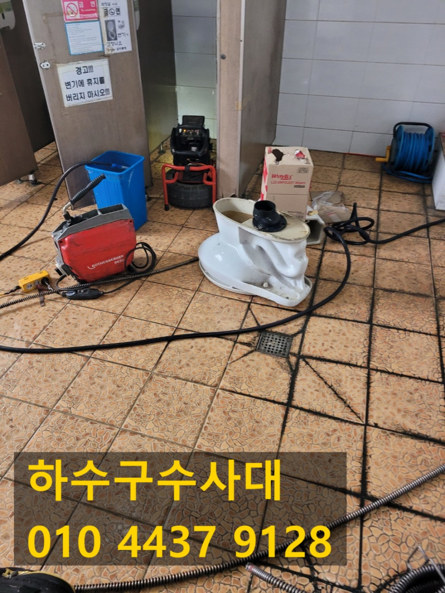
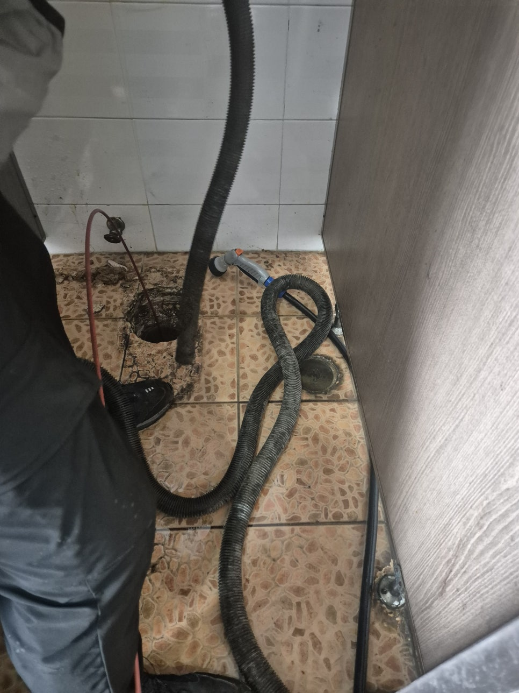
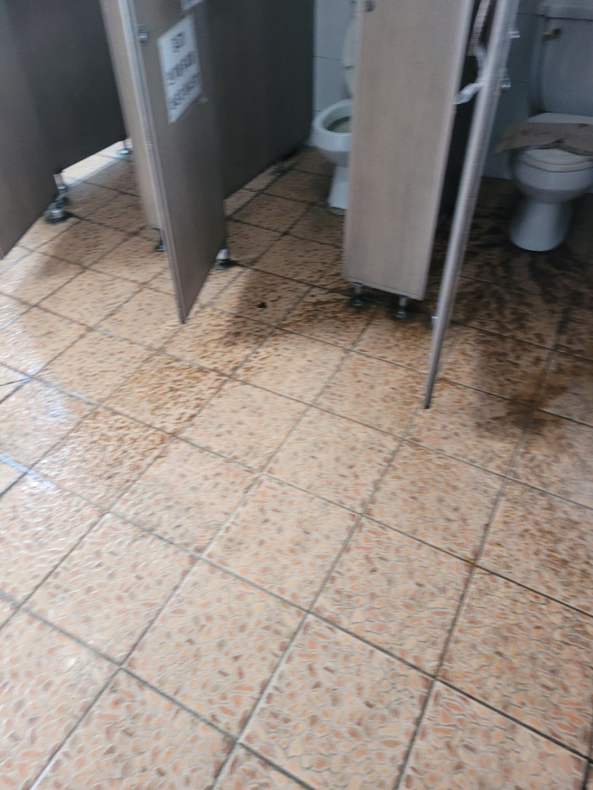
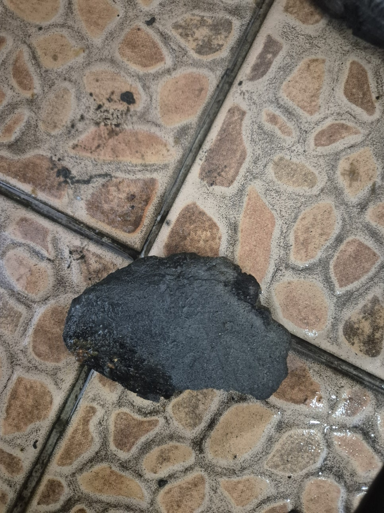
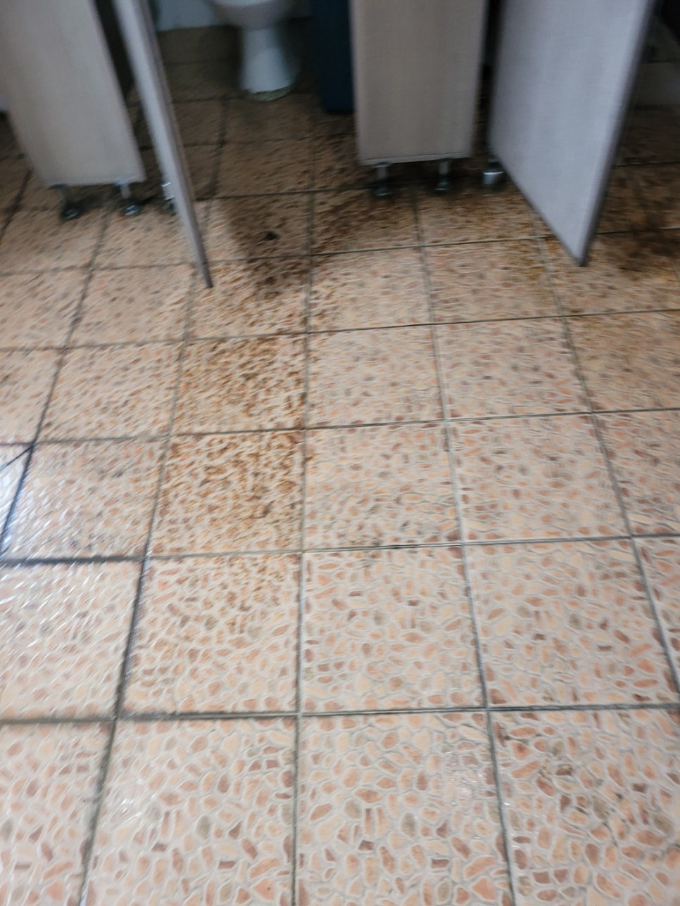
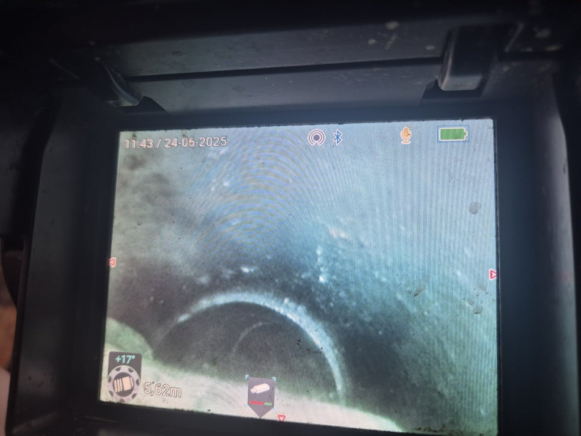
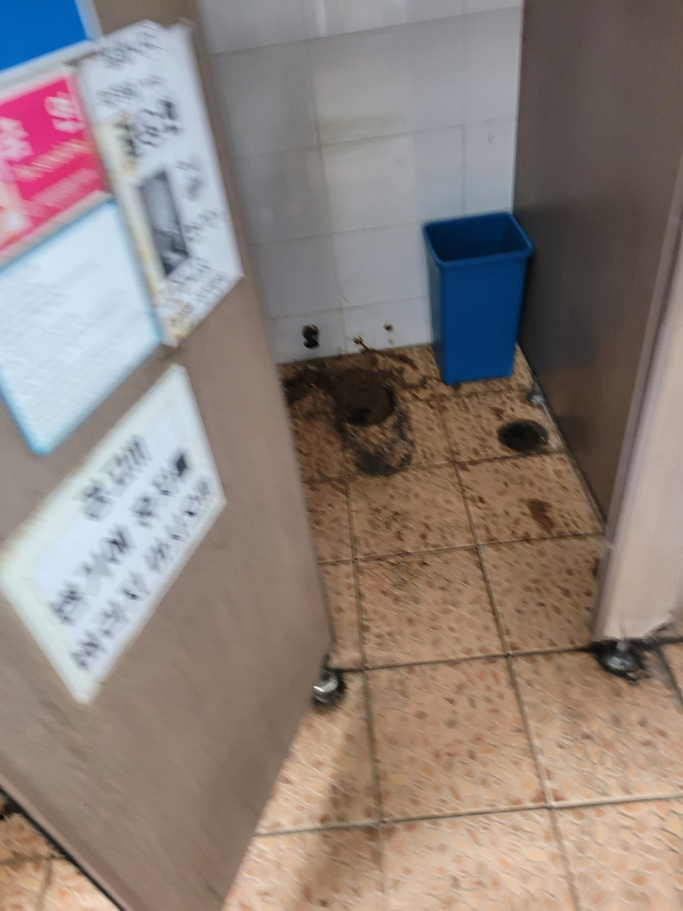

🏠 화성 우정읍 변기역류 장안면 화장실막힘 하수구뚫는업체 배관청소
화성 우정읍 싱크대막힘 전문 시공 후기

📋 작업 개요
- 위치: 화성 우정읍, 우정읍, 화성
- 서비스 유형: 싱크대막힘, 변기막힘, 하수구막힘, 배관막힘, 맨홀막힘, 누수수리, 역류해결, 뚫는업체, 배관청소, 고압세척, 악취차단
- 작업 일시: 2025. 6. 26. 23:09
- 업체명: 하수구수사대 (010-5615-2118)
🔍 문제 상황
안녕하세요.
하수구수사대 인사드립니다.
화성 우정읍 변기역류 장안면 화장실막힘 하수구뚫는업체 배관청소
물에 잘 녹기 어려운 고체 찌꺼기가 유입될 경우 파이프 내부는 화장실막힘 베란다막힘 어떤 것이든 더러운 물질로 막혀버릴 수 있어요.
거기다 슬러지가 점성으로 뭉치면 더욱더 딱딱한 덩어리를 만들게 되는데요.
웬만하면 단면이 잘 만들어질 수 있게 종종 배관 내부의 오염물 정비를 해주고 배수구 클리너 세척도 깨끗하게 진행해야합니다.
이번에 찾아간 현장은 하수구막힘 이상으로 서둘러 작업을 신청해주셨던 곳으로 대개 생기는 화장실막힘 문제였는데요.
문제가 확인된 곳은 어디냐면 바로 메인 하수구였어요.
여러 종류의 외부 물질이 막혀서 하수가 순조롭게 내려가지 못했습니다.
일단 화장실은 여러 하수 시설이 시공되어 있어 독립된 시설마다 빠짐없이 확인을 해야 하는 장소입니다.
종종 막힌 부분만 단순하게 정리를 하고 작업을 마무리하는 업체들도 있지만 화장실은 원체 하수가 유입되는 구역이 많은데다 흘러온 오수의 부류에 따라 따로따로 관거가 시공되기 때문에 전체적인 관리를 진행하고 구체적인 정비가 필요해요.
내시경 카메라를 사용해서 점검을 해 본 결과 화장실막힘 문제는 머리카락을 비롯한 찌꺼기가 발견됐어요.

🔎 원인 분석
💡 전문가 진단: 정밀 진단 장비를 사용하여 슬러지의 고착 여부를 판명하고 타격/세척 작업을 실시했습니다.
아마도 세수대를 이용하면서 들어간 머리카락을 비롯한 다양한 찌꺼기가 함께 결합되면서 해당 문제를 초래하게 된 것으로 확인됐어요.
화장실에서 보통 활용하는 세정제는 자체 점성이 포함되어 있어 슬러지가 결합되면 금방 덩어리가 됩니다.
시간이 갈수록 석회질의 물질과 함께 섞일 경우 견고한 덩어리가 형성될 수 있어요.
이러한 찌꺼기의 상태는 배수관을 더욱 빠르게 차단하여 향후 내부 막힘이 나타날 수밖에 없어요.
사용자께서도 맨 처음에는 배수가 제대로 진행되지 않아 힘들었지만 그다지 큰 문제로 생각하지는 않으셨다고하는데요.
그렇지만 슬러지가 끊임없이 쌓이게 되면서 철저하게 단면을 차단하여 오수가 역류되는 일이 발생하게 되었다고 하시더라구요.
뿐만 아니라 불쾌한 냄새도 과도하게 발생했다고 알려주셨는데 배관 속에 형성된 이물질이 변질되게 된 것 같아요.
위생적인 부분에도 멀쩡하지 않지만 식구들의 건강에도 부정적인 영향을 주기 때문에 가급적 관로 관리는 신속히 진행해야하고 문제가 계속된다면 기술자에게 부탁하는게 좋습니다.
배관의 쌓여있는 이물질 제거를 위해 일단 석션기를 써서 청소를 해야 돼요.
단면을 상세히 들여다보면 더러운 물질이 통로를 가득 막고 있어 다른 장비가 들어갈 수 있는 공간 자체가 존재하지 않았거든요.
석션 작업을 통해 최대한 많은 면적의 오염 물질을 빼내고 단면을 만든 뒤 집중적으로 슬러지를 제거해 드렸어요.
배관 속에 쌓인 찌꺼기는 그 유형이 매우 다양한만큼 장비 역시 배관의 형태에따라 투입이 되어야 해요.
스프링 시설 등을 사용해 배수관의 적체되어 있는 찌꺼기를 점차 제거했습니다.

🔧 작업 과정
무엇보다 배수관의 단면이 바뀌는 위치에서 불순물의 누적 현상이 심하게 발생했습니다.
이 지점은 더러운 물이 제거돼도 유속이 제대로 만들어지지 않는 장소로 점성이 있는 입자가 서서히 쌓이게 될 수 있는 지점이기도 한데요.
우선 스프링 도구 등을 활용하여 배관의 단면을 막고 있는 불순물들을 말끔하게 처리하고 적절한 유속이 형성될 수 있도록 정비해드렸어요.
예상보다 관리해야 할 구역이 더 많아서 더욱더 세심하게 정비가 시행되었어요.
마침내 스케일링 작업 과정에서 관로에 단단함을 훼손할 수 있는 걱정이 있어 내시경 카메라 도구를 사용하여 수리를 마무리했습니다.
카메라 설비는 퇴적되어있는 오염물의 많은 부분을 검사할 수 있어 무척 효율적으로 하수구막힘 처리할 수 있어요.
배관에 대한 안전성은 기술자가 필수적으로 체크해야하는 점인 만큼 경험 많은 곳이 한층 더 쉽게 작업할 수 있습니다.
짐작하시는 것보다 불순물을 제거하는 중에 하수관 자체가 파손되는 사례가 많이 있습니다.
상기의 징후는 앞으로 누수 문제로 이어지고 유출된 하수는 주위 토사와 구조물을 손상시키기 때문에 중대한 문제가 되기도 합니다.
저희들은 작업중에 반드시 내시경 장비를 쓰고 작업이 끝나면 바로 결과물을 카메라 장비로 설명을 드려요.
그렇게 하다 보니 좀 더 불순물 제거 작업에 신뢰도를 높일 수 있어요.
배수구 막힘에 제거된 불순물만 꽤 많은 부피가 제거되었습니다.
저희가 사용하고 있는 하수구 구조는 여러 형식의 오염물질이 들어오는 곳이라고 생각하면됩니다.
이때 만들어진 점성이 서로 엉기면서 배관 막힘을 발생시킬 수 있어요.
고체 물질은 금세 상하기도 하고 종종 관로의 약한 위치에 문제를 발생시킬 수 있기 때문에 꼭 전문가에게 관리를 받을 수 있게 사전에 처리해야합니다.
배관속에 쌓여 있는 오염물의 상당한 양을 청소하여 단면을 청결하게 보존하고 적정 유속이 구성될 수 있게 상태를 조성해드렸습니다.
생각보다 빼낸 오염 물질 자체가 다량이라는 것은 확인 가능합니다.
카메라 장비를 활용해서 배관 내부를 조사해보면 실제로 이용하고 있는 배수관의 크기가 매우 작다는 것을 알 수 있어요.
때문에 이용자가 올바르게 관리를 진행해야만 단면을 지키고 알맞은 유속이 나올 수 있게 시설을 관리할 수 있습니다.
스케일링 과정을 통해 관리된 배관 상태는 보는 바와 같이 깔끔하게 작업된 사실을 볼 수 있습니다.


✅ 작업 완료
단면이 완벽히 만들어지면서 초기에 관로를 설계할 때 계획한 통수량도 지속할 수 있습니다.
모든 과정은 사전에 의뢰인에게 상세하게 말씀을 드리고 있으며 작업을 진행 후 최종 결과물도 빠짐없이 확인하면서 문제가 있는 지점을 꼼꼼하게 정비할 수 있게 자세히 설명해드립니다.
사용자가 시설에 대한 장단점을 잘 인지하고있으면 화장실막힘 베란다막힘 어떤 것이든 하수관의 내구성을 지속하면서 시설의 사용 기간도 오랜시간 유지할 수 있습니다.
하수구수사대 010 4437 9128
#우정읍하수구막힘 #우정읍싱크대막힘 #우정읍싱크대역류 #우정읍배수관막힘 #우정읍배관뚫는곳 #우정읍설비 #우정읍맨홀막힘 #우정읍하수구뚫는업체 #우정읍변기막힘
#장안면하수구막힘 #장안면싱크대막힘 #장안면싱크대역류 #장안면하수구역류 #장안면화장실막힘 #장안면설비 #장안면하수구뚫는곳 #장안면하수구뚫는업체 #장안면변기막힘




⚠️ 베란다 누수 및 방수 관리 방법
- ✅ 비가 많이 올 때 창틀 주변이나 아래층 천장에 얼룩이 생기는지 정기적으로 확인해 보세요.
- ✅ 우수관 주변 실리콘 마감이 들뜨거나 깨진 틈새가 있는지 손상 여부를 수시로 체크하세요.
- ✅ 베란다 바닥 타일의 줄눈(메지)이 소실되면 그 틈으로 물이 침투하여 누수가 유발됩니다.
- ✅ 누수 의심 증상 발견 시 방치하면 아래층 손실이 커지므로 즉시 전문가의 진단을 받으십시오.
💡 핵심 정리
- 확실한 장비 작업(내시경 점검 및 샤프트 스케일링)으로 원인을 뿌리 뽑습니다.
- 작업 후 1년 이내에 동일한 부위 재발 시 100% 무상 A/S 서비스를 보장합니다.
- 서울 · 경기 · 인천 전 지역에 24시간 언제든 긴급 출동할 수 있도록 항시 대기 중입니다.
❓ 자주 묻는 질문 (FAQ)
🚨 화성 우정읍 싱크대막힘 문제로 고민이신가요?
정확한 원인 진단과 확실한 시공으로 재발 없는 해결을 약속드립니다.
24시간 긴급 출동 | 서울 · 경기 · 인천 전지역 | 1년 내 재발 시 무상 A/S